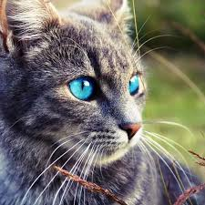
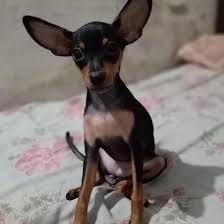
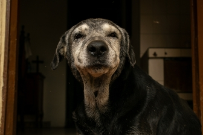
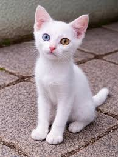
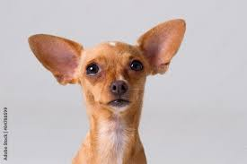
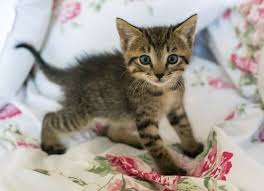
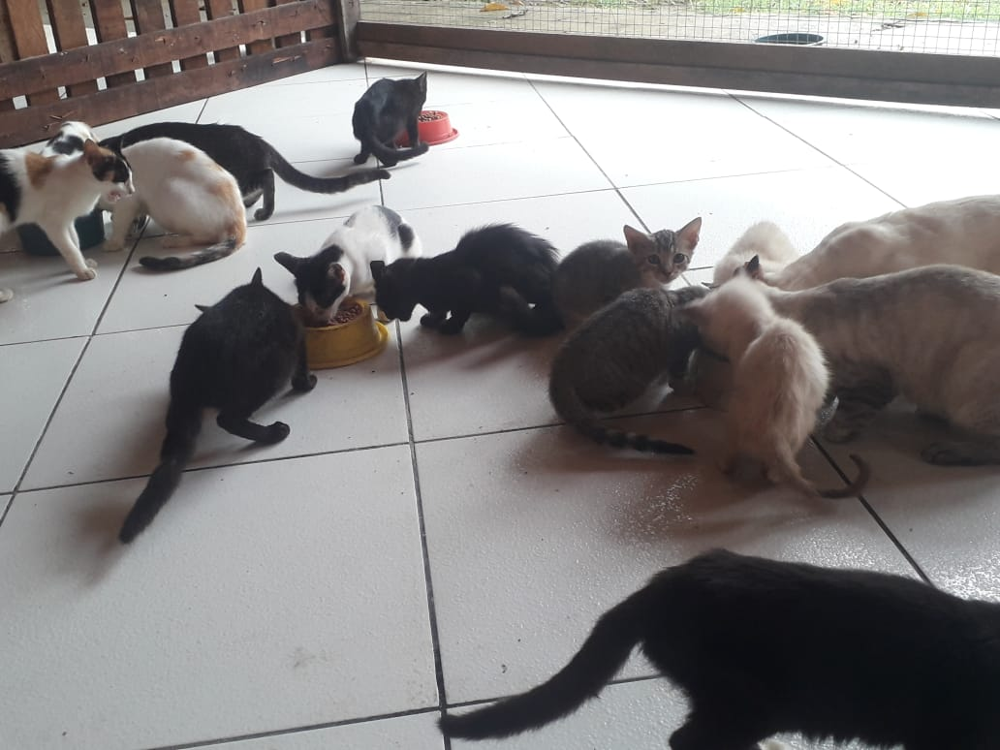
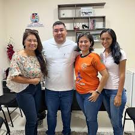
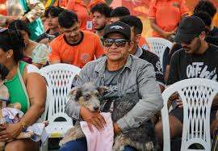

.jpg)
Salvando vidas,
transformando histórias
Dedicados ao resgate e reabilitação de animais em condição de vulnerabilidade.
Adote agoraSobre nós
Nossa missão
Resgatar, cuidar e proteger cães e gatos em situação de abandono, maus-tratos ou risco nas ruas de Parintins-AM
Nossa história
Somos uma associação sem fins lucrativos dedicada ao resgate de animais de rua em Parintins (AM). Surgimos a partir da união de voluntários que já atuavam individualmente na proteção animal. Em maio de 2016, esses esforços se uniram oficialmente, dando origem à APUP – Associação Patinhas Unidas de Parintins.
Animais Para Adoção






Notícias
Acompanhe nossas últimas atividades.

1 de abril, 2026
50 animais resgatados em março
Resgatamos 50 animais em situação de risco no mês de março.

2 de agosto, 2020
Reconhecimento Oficial
A APUP Parintins é oficialmente entidade de utilidade pública.

Setembro, 2025
Mutirão de Castração
Em parceria com a Prefeitura de Parintins continuaremos o mutirão.
Serviços
Como ajudamos a comunidade.
Resgate
Resgatamos animais em situação de risco e abadono.
Cuidados Veterinários
Atendimento médico e vacinação.
Adoção Responsável
Processo de adoção cuidadoso e acompanhamento.
Educação
Campanhas de conscientização.
Contato
Entre em contato conosco
Informações
Endereço
Estrada Governador Braga, 711
Jacareacanga, Parintins - AM
Telefone
(92) 99262-4521
Email
contato@resgateanimais.org
Horário de Funcionamento
Segunda a Sexta: 8h - 18:30h
Sábado: 9h - 14h
Domingo: Fechado